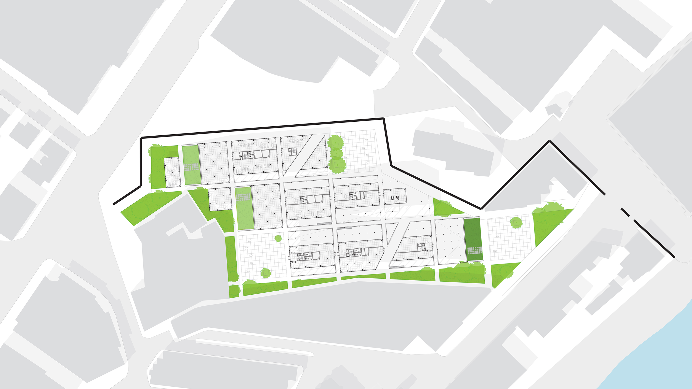
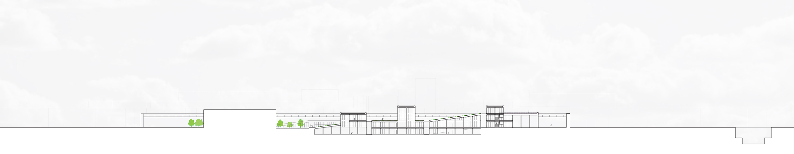
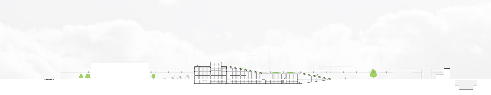
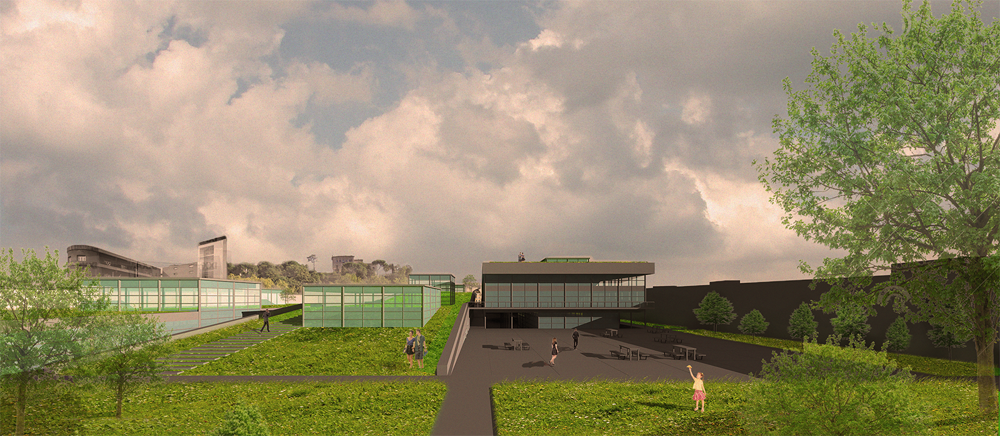

INTERWEAVING LANDSCAPE
Introduction
The famous city of Rome is bursting at the seams with historic sites and cultural richness. This has caused the city to become one of the most vital tourist destinations in the world. Unfortunately for residents and tourists alike, the resulting cityscape has become one of overt commercialization and expensive day-to-day living.
This dense and rigid city has exhausted its residents, making everything an opportunity for marketable sales and leaving almost zero locations to rest and be at peace. Yet, somehow, cradled by the Aurelian Wall, an empty lot near Porta Portese remains unbuilt. While Rome does benefit financially from malls and stores, the following concept for this lot attempts to find a balance between the extreme marketability of Rome, and the increasingly absent places of respite for both the economically vital tourists and, most importantly, the hard-working residents of this iconic city.
Analysis
To begin, The virtues of the site were analytically identified and procedurally overlaid on top of each other. These layers were then used to create a series of metrics to guide the design. Every alternative for the metrics was pursued until an ideal was identified. The goal for the site became to create a more public, open and peaceful environment; a necessary haven from a city with unending density and overwhelming history.
Figure Ground
Green Space
Historic Boundaries
Light Sources
Public Transportation

Historic Waterflow
Historic Fabric
Program Fabric
Design
The site was given priority not in its architecture but in its ground surface and soil, where a tourist may look out to the historic city, and a resident may rest from a hard day’s work. Six procedural steps gave shape to the building and its infrastructure, creating a series of interweaving landscapes whose vast green spaces cater to the wandering passerby as well as the resting Roman local.





